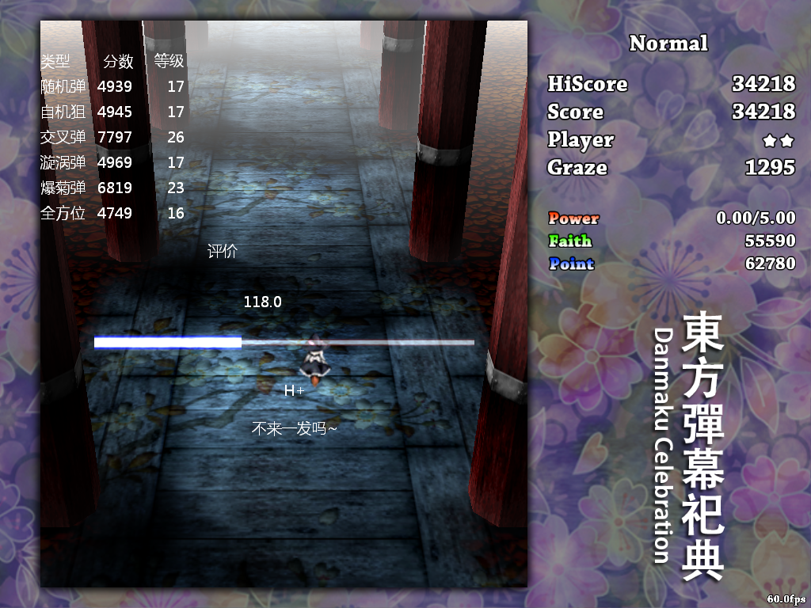
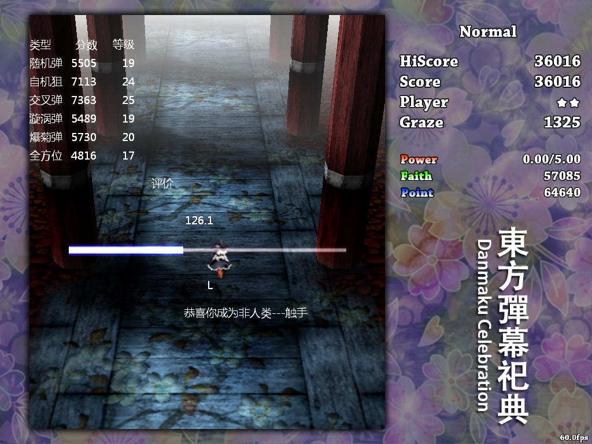

先上图
第二发

第三发

第一发好像是106左右吧。。忘了截图。。
emmm怎么说感觉自己N都没通完就给这评价未免太不合理了一点。。而且通过练习分数还是可以上来的。。
说一下对各个弹幕的感觉：
随机弹：
话说第一发随机弹到level6就挂了qaq原来窝随机弹那么菜的么。。
不过这里给窝感觉压力最大的确实是随机弹，作为最常见的弹幕练熟一点也是必须的。。（信心受到了摧残
总的来说就是从level1开始就压力很大（主要是密度比较高），精神一直都非常集中，然后后面弹速再加快感觉就有点不行了qaq大概是到level15就有点乱扭了。。不过第三发好像还猴了蛮久的2333
看别人好像是侧下方躲避不过我还是比较喜欢正下硬杠2333其实说不定侧下方压力真的比较小呢。。（参考无双风神）
高速弹确实是硬伤，不过这次还让窝意识到自己对密度的承受能力其实也比较一般。。
所以随机弹一定要再多练啊多练啊。。
自机狙：
相对来说比较轻松的一关。。
主要是注意折返。。不过到后面空间会越来越小，折返好像也缓解不了多少压力。。那就在移动的过程中把前面的弹幕当成随机弹扭一扭吧。。在level20之前迎面而来的应该还都是些低速弹。。要是高速弹就呵呵。。
交叉弹：
感觉没怎么遇到过。。所以经验也不足。。
不过从结果看来感觉还行？那么请问为什么窝神妈一非收率那么低（
主要还是level15之前的都太水了。。而且弹速和密度的增长都比较慢。。所以前面的热身可以说是非常充分了，到后面也比较有感觉。。要是一开始上来level18可能就很槽。。
要形容一下感觉吧？就是在一个弹幕的轨迹上侧滑然后注意避开另一波弹幕？或者在2个轨道之间来回穿梭？？（反正是怎么方便怎么猴
这个可以练，提升空间还是有的。。
旋涡弹：
好像之前都没听说过有这种弹幕= =!印象中属于这类的不多啊，水银之毒算是比较经典了。。然后还有就是绕圈圈？？（噩梦啊
然后就全靠底力扭了。。所以结果貌似也比较一般？
感觉就是只是从一侧过来的就找缝钻就行了，没缝就在2批弹幕之间找（这里有缝的概率还是蛮大的），然后就要注意方向问题了。。反正不要跟着旋涡绕。。会晕。。
比较难遇到吧。。也没有刻意练的必要。。
爆菊弹：
比较害怕的一类吧。。被正邪吓哭了qaq
感觉还是遇到妖梦的4符比较有信心吧，人家好歹都是直弹。。
所以也可以考虑练练。。
然后第三发貌似有段时间躲在侧方很舒服。。然而最后是自己慢慢被逼死没办法回到中间。。所以还是要尽量往中间走。。
这个热身也是比较足的。。主要就是要放开眼界找空间比较大的块去钻。。要频繁更新交换视野。。可以说是比较累了。。
不过这个对付正邪可能还有点难。。因为窝已经好几次撞人家脸上了（雾）
全方位：
没听过+2
听名字给窝的感觉就是紫妹终符。。不过好像和哆啦咪（EX道中）的比较类似？
前期热身也是很足的。。中期由于是按逆时针边绕边放弹，所以比较有可能会出现螺旋式的弹幕，出现了就很容易避开了。。其余的自己用底力猴一猴也是很ok的。。后期弹速和密度就变高了(主要是密度)，然后扭过了就放大视野找下一个比较空旷的块去钻吧。。压力大也就只能在小范围扭扭然后biu。。
不过感觉这个判定好迷啊。。好几次以为自己已经gg了结果好像没什么事？？
小结：
自己还是太菜了。。评价却谜之高。。如果真有L的水平窝还是希望自己有朝一日能打通一个L吧qwq不过实战面对的情况肯定是要比这个测试要复杂得多的。。很多弹幕结合起来掩饰一下可能窝就没有看破？或者场面很乱心态很炸，想收波点然后各种抱B什么的？？路还是很远啊。。
PS：这个测试的rpy窝到现在都不造要怎么存，敲完名字然后怎么确认啊（捂脸